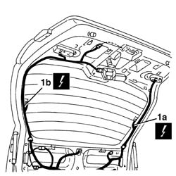
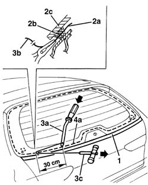
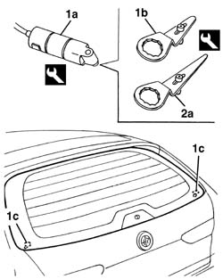
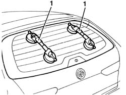
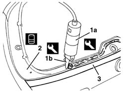
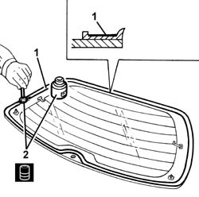
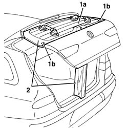
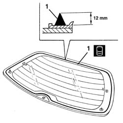
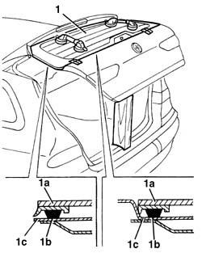

7035B16 Tailgate windscreen (bonded type) WINDOW GLASS - R.R. - Includes. cleaning housing in tailgate
- Path
- Procedures > 70 FITTINGS > 7035 BODYSHELL WINDOWS > 7035B rear window > 7035B16 Tailgate windscreen (bonded type) WINDOW GLASS - R.R. - Includes. cleaning housing in tailgate
- Kind
- repair procedure (removal / refitting; the operation number is the code)
- Applies to
- all engines; all production periods
- Interactive page
- https://sloeber94.github.io/elrnDB-a156/en/#/3238780
Applies to: all engines; all production periods; only with equipment: Station Wagon
 Removing
Removing
 Refitting
Refitting7040G36 BULB HOLDER FOR LOAD CARRYING COMPARTMENT lighting on tailgate - R.R.
7015A05 tail-gate lower interior panel-r r
7015A06 tail-gate upper interior panel-r r
7095B82 Rear windscreen wiper WIPER ARM. - R.R.
7095B86 Rear windscreen wiper MOTOR. - R.R.
1. Disconnect the electrical connections for the heated rear windscreen (1a, 1b). Move aside the electrical connections for the rearscreen so as not to damage them while cutting the bead of sealant.
 | Name | Connector |
|---|---|---|
1a | Heated rear windscreen |
| Name | Connector |
|---|---|---|
1b | Heated rear windscreen |

Applies to: all engines; all production periods; only with equipment: Station Wagon
To cut the bead using harmonic wire, proceed as follows.
1. Apply a double layer of adhesive tape to protect the lower edge of the tailgate.
2. Cut a section of harmonic wire about 50 cm long, then, using pliers, insert one end (2a) of the harmonic wire through the bead of sealant (2b) which secures the rear window (2c).
3. Secure the end (2a) of the wire to the appropriate retaining tool (3a) located inside the car. Secure the end (3b) of the wire to the traction handle (3c) located outside the car.
4. The operator inside the car must keep the end of the tool (3a) on the bead of sealant (4a) at about 30 cm from the point of passage of the wire. The other operator outside the car must pull the handle (3c), following the outline of the rear window, and cut the bead of sealant (4a). Repeat the operation in sections of about 30 cm, until the whole of the bead of sealant (4a) is cut.

Applies to: all engines; all production periods; only with equipment: Station Wagon
To cut the bead using the vibrating knife, proceed as described below.
1. Using a vibrating knife (1a) and blade (1b), cut the sealant along the top and the bottom of the rearscreen. Work from inside the vehicle.
 | Name | Country |
|---|---|---|
1a | Vibrating knife | 1.823.011.000 |
| Name | Country |
|---|---|---|
1b | Blade | 1.823.021.000 |
2. Fit the blade (2a) and cut the bead of sealant on the left and right sides of the rearscreen. Work from inside the vehicle.
| Name | Country |
|---|---|---|
2a | Blade | 1.823.023.000 |

Applies to: all engines; all production periods; only with equipment: Station Wagon
1. After having cut the entire bead of sealant, fit the suction pads to the rearscreen; then, with the assistance of a second operator, remove the rearscreen and rest it on a support.

Applies to: all engines; all production periods; only with equipment: Station Wagon
Refitting
RemovingCheck that the window is undamaged.
Check that the heated rear windscreen is working properly and conduct an electrical test, if necessary.
1. Using the vibrating knife (1a) and blade (1b), cut and level the sealant in the rearscreen housing so that the thickness left is between 0.25 and 1 mm without scratching the paint. The sealant left in the housing will act as a backing for the new bond.
| Name | Country |
|---|---|---|
1a | Vibrating knife | 1.823.011.000 |
| Name | Country |
|---|---|---|
1b | Blade | 1.823.010.000 |
2. Clean the rear window seating carefully with compressed air and degrease thoroughly with heptane.
Touch up the paintwork if necessary. If glueing takes place 60 minutes after cutting and smoothing the bead of sealant, treat the sealant surface with the specific activator and wait 15 minutes before fixing the windscreen.
 | Type | Component | Name | Qty. |
|---|---|---|---|---|
2 | PUR activator | Rear window compartment | - | - |
3. Remove the adhesive tape from the lower edge of the tailgate.

Applies to: all engines; all production periods; only with equipment: Station Wagon
Check that the new window is not damaged.
1. Degrease with heptane the surface of the moulded seal to be glued.
2. Apply the activator on the degreased surface. Wait about 16 minutes before proceeding with the next operation, to allow the solvent to evaporate.
| Type | Component | Name | Qty. |
|---|---|---|---|---|
2 | PUR activator | TAIL-GATE WINDOW GLASS | - | - |

Applies to: all engines; all production periods; only with equipment: Station Wagon
Avoid touching the areas treated previously with your hands.
1. Test fit the rearscreen (1a) and check that it is correctly positioned with the help of centering pins (1b).
2. Fix the opening position of the tailgate with the rearscreen housing horizontally, in order to facilitate the subsequent refitting operations.

Applies to: all engines; all production periods; only with equipment: Station Wagon
1. Use an air gun to extrude a bead of sealant as evenly as possible along the perimeter of the rear window. Begin applying the sealant from the middle of the lower edge and continue without breaks around the entire edge of the window.
| Type | Component | Name | Qty. |
|---|---|---|---|---|
1 | Window bonding sealant | TAIL-GATE WINDOW GLASS | - | - |

Applies to: all engines; all production periods; only with equipment: Station Wagon
1. With the assistance of a second operator, fit the rear window in its seating immediately after applying the sealant and bed it in place in order to ensure the correct matching between the window (1a), the sealant (1b) and the rearscreen housing (1c).

Applies to: all engines; all production periods; only with equipment: Station Wagon
Before refitting the external and internal components of the car, check that there are no penetration points: apply soapy water using a sponge along the outer perimeter and blow through from the inside with compressed air to detect any leaks.
Connect the rear window electrical connections.
7095B86 Rear windscreen wiper MOTOR. - R.R.
7095B82 Rear windscreen wiper WIPER ARM. - R.R.
7015A06 tail-gate upper interior panel-r r
7015A05 tail-gate lower interior panel-r r
7040G36 BULB HOLDER FOR LOAD CARRYING COMPARTMENT lighting on tailgate - R.R.
Topics linked from this page (8)
- 7015A05 tail-gate lower interior panel-r r
- 7015A06 tail-gate upper interior panel-r r
- 7040G36 BULB HOLDER FOR LOAD CARRYING COMPARTMENT lighting on tailgate - R.R.
- 7095B82 Rear windscreen wiper WIPER ARM. - R.R.
- 7095B86 Rear windscreen wiper MOTOR. - R.R.
- 7210G76 rear spoiler
- P55A Heated rear windscreen ( LEFT TAILGATE )
- P55B Heated rear windscreen ( LEFT TAILGATE )